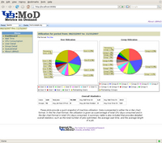
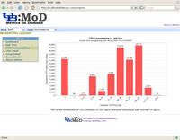
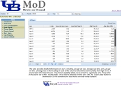
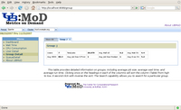

UBMoD is an open source data warehouse and web portal for mining statistical data from resource managers (TORQUE and OpenPBS currently supported) commonly found in high-performance computing environments. It was developed by the Center for Computational Research at the University at Buffalo, SUNY.
UBMoD presents resource utilization (CPU cycles consumed, total jobs, avg wait time, etc) for individual users, research groups, departments, and decanal units. A role-based authentication scheme can be set up to display data in the format best suited to the end-user (for example, as a student, research group leader, department chair, dean, etc.). The interface provides a dashboard overview of resource consumption along with fine-grained control over the time period and resources that are displayed. The information is presented in easy to understand interactive charts, graphs, and tables.
For more information, questions, or feedback send email to ubmod at ccr.buffalo.edu
UBMoD is an open source project released under the University at Buffalo Public License ("UBPL") Version 1.0 (a derivative of the Mozilla Public License). You can obtain a copy of the license here.
|  |  |
|  |  |
{kind=link}
{kind=link}
{kind=link}
{kind=link}